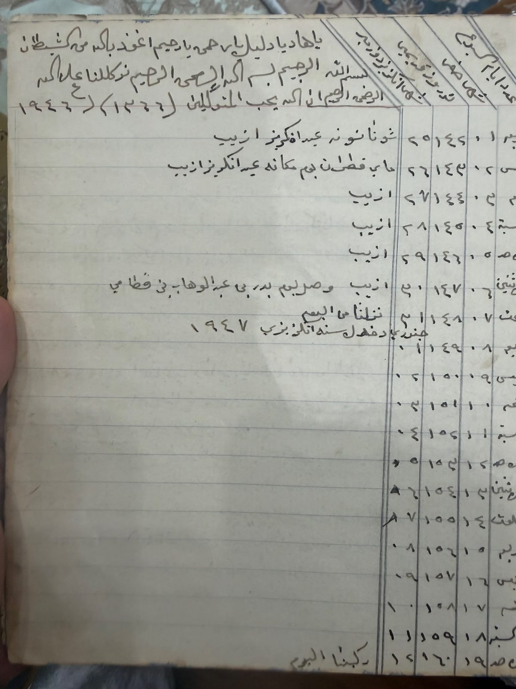

ديسمبر ١٩٤٦ إلى يناير ١٩٤٧ · مذكرات بحرية بخط اليد (الجزء السادس)
مذكرات علي محمد القبندي: بوم عبدالوهاب بن عبدالعزيز وبوم ابنه بدر
ما هي
دوّن علي محمد القبندي مذكراته في البحر يوما بيوم في أعمدة لليوم والتاريخ والريح، مع سطر عما جرى. وفي موسم ١٩٤٦ و١٩٤٧ يذكر وصول بوم بدر بن عبدالوهاب بن قطامي، ثم دخول السنة الإنجليزية ١٩٤٧. وفي صفحة لاحقة يذكر وصول عبدالوهاب بن عبدالعزيز وسفر بوم عبدالوهاب.
أهميتها
بحار من عائلة أخرى يكتب في حينه، ويُظهر الأب والابن وكل منهما يسيّر بومه في الأسفار الطويلة سنتي ١٩٤٦ و١٩٤٧.
من المقصود
الأب عبدالوهاب بن عبدالعزيز والابن بدر بن عبدالوهاب بن قطامي يطابقان عبدالوهاب عبدالعزيز القطامي (توفي ١٩٦٣) وابنه بدر عبدالوهاب القطامي.
صور الصفحات



النص الأصلي
ملاحظات
نُسخت فقط الأسطر الواضحة في الصور، والنقاط تدل على أسطر لم تُنسخ. وعلى الغلاف: «مذكرات علي محمد القبندي، السادس، سبتمبر ١٩٤٦ إلى ٣٠ مارس ١٩٤٩».
أسماء أخرى
المصادر
صوّرتها نور القطامي في نوفمبر ٢٠٢٦، ونسخ منها محفوظة في درايف العائلة.
مرجع الأرشيف
- Private notebook · مذكرات علي محمد القبندي، السادس، ١٩٤٦ إلى ١٩٤٩
كيف كُتب هذا النص: نسخ جزئي للأسطر الواضحة. الترجمة الإنجليزية من Claude، يرجى مراجعتها.
افتح في الموقع التفاعلي